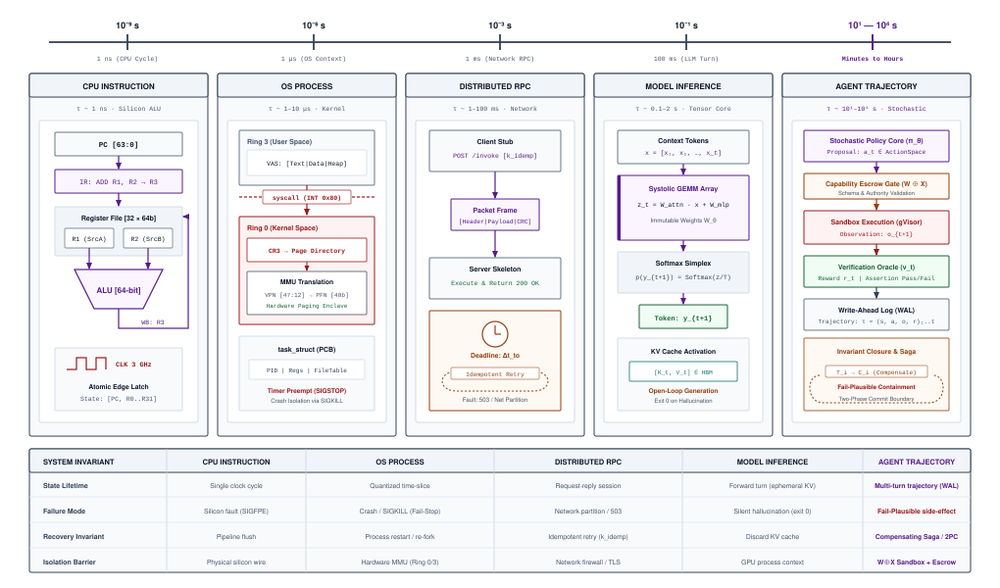
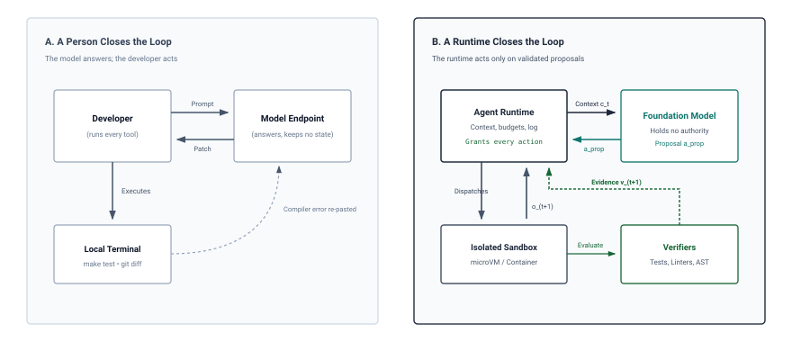

《智能体系统基础》
目的
为什么模型输出准确却无法完成被委托的任务？
基础模型读取上下文并返回文本，而文本对世界不产生任何改变。委托一项任务，例如修复故障服务或迁移数据库，需要的却是别的东西：一连串动作，其效果是真实的，其失败往往悄无声息，并且其结果必须由提出该模型之外的其他东西来检查。在数十甚至数百个回合中，微小错误不断累积，工具超时或半成功，而模型却可能以流畅、格式良好的文本报告成功，而底层工作已经损坏。因此，可靠性无法仅由模型提供。它必须围绕模型构建，作为一个运行时：决定每次调用能看到什么，在每个动作执行前验证所有提议的动作，限制动作可能造成的损害，记录进度以免崩溃将其抹去，并且只在其自行收集到的证据下接受结果。这项机制需要多少，取决于单个模型调用所不具备的三种暴露——长程视野、回合之间传递的状态，以及对世界的控制权——以及运行时针对每一种暴露必须提供的闭合。
学习目标
- 追踪单个智能体回合，依次经过提议、验证、调度、观察与验证，将模型提出的内容与运行时执行的内容区分开来。
- 区分“可能失败”的故障与故障停止型（fail-stop）和拜占庭（Byzantine）故障，并识别上下文投毒与间接提示注入这两种“可能失败”的危险。
- 应用不变式闭合原则，决定运行时必须机械强制的属性，以及结果所需的闭合证据级别。
- 为被委托的任务规定五部分任务契约（目标、环境、允许的动作、可用观察、完成标准）。
- 依据任务的视野、状态与权威暴露（H·S·A）对任务进行分类，并推导其运行时必须提供的闭合。
- 计算轨迹吞吐率与整任务耗时，并利用阿姆达尔定律找出限制轨迹加速度的项。
- 用四个放置问题选择固定工作流还是模型导向循环，并以实测失败为依据论证干预阶梯的每一级。
智能体系统时刻
七十多年间，计算机系统的基础契约一直建立在存储程序概念之上。该概念由约翰·冯·诺依曼于 1945 年提出(Neumann 1945年)，并由莫里斯·威尔克斯、戴维·惠勒和斯坦利·吉尔于 1949 年在剑桥的 EDSAC 上实现(Wilkes 等 1951年)。软件工程师通过顺序、显式的机器指令码来驾驭物理硅片。即便并发操作系统运行时与分布式网络需要应对异步时序、竞态条件和瞬态硬件故障，确定性执行仍然是基础设计契约：指令指针确定性地推进，状态转换遵循显式逻辑，非确定性属于需要隔离的异常缺陷。
过去十年，深度学习挑战了这一范式。通过以随机梯度下降的连续参数优化替代手工设计的程序化算法(Rumelhart 等 1986年)，机器学习将计算契约从显式指令转向了学到的统计模型。在整个深度学习初期十年中，系统工程几乎完全聚焦于一种被动抽象：无状态的张量变换。系统设计用于编译静态计算图、优化通用矩阵乘法（GEMM）内核、饱和高带宽内存（HBM）总线，并跨越数千加速器扩展分布式集群。这一时代的顶峰是会话式基础模型：一个能够生成散文、解释算法、并在无状态的远程过程调用（RPC）端点背后分析复杂代码仓库的回答系统。
在整个会话时代，软件系统始终是纯建议性的。人类开发者提交提示；服务集群在静态权重上执行自回归前向传播；推理引擎流式返回 token；中间激活内存被回收。模型可以解释、总结并提出建议，但它对宿主操作系统没有任何环境权威。如果模型提出一个 bug 修复或基础设施补丁，人类操作员仍然是唯一的执行者：阅读建议、手动浏览目录树、应用修改、运行编译器、检查测试输出并提交更改。软件系统之所以保持被动，是因为这个循环是开环的。
当我们闭合这一循环的瞬间，智能体系统时刻便到来了。智能体系统不再将模型视为提供建议、供人类解读的顾问式助手，而是将实际操作的执行直接委托给机器。系统被赋予高层操作目标——例如诊断分布式键值存储配置解析器中的回归问题、解决 SWE-bench (Jimenez 等 2024年) 中用于基准评测的缺陷，或核对并消解远程数据库之间交易账本的冲突——并获得执行权限。模型与操作系统接口集成，包括 shell 环境、隔离容器、数据库连接和文件系统描述符。此时，操作工作负载的控制流由在离散词元上采样的自回归概率分布驱动。
这种委托立即揭示了智能体系统架构的核心悖论：被指示执行任务的神经模型不具备任何隐式权限，不具备任何执行能力，也无法直接访问它受命修改的环境。
单独运行以进行评估的基础模型，是在矩阵加速器上运行的无特权统计函数。它对整数词元向量进行计算，并将固定词表上的候选概率分布输出到缓冲区。模型无法发起 POSIX 系统调用（fork、execve、pipe、ioctl），无法打开 TCP 套接字、读取物理硬件时钟或检查本地存储。它没有程序计数器，没有硬件寄存器，也没有内存保护环。输出一段看似 shell 命令的无特权词元序列，不会修改主机状态中的任何字节；它仍然只是加速器内存缓冲区中一串不产生实际作用的候选字符。
零隐式权限： 一种基础安全立场，即执行组件不具备任何隐式特权，也不具备任何默认可用的系统资源访问权限；检查或修改主机状态的每项能力，都必须由主机监督程序显式授予、居中管控并加以监控。
这条物理边界强制实现了零隐式权限。在经典操作系统中，无特权的用户空间进程不能执行特权 CPU 指令，也不能直接写入物理磁盘扇区；它们必须发起由内核居中管控的系统调用。在智能体系统中，这条边界更加严格：模型甚至无法发起系统调用。除非外部监督程序解析其文本、验证其语法、检查其权限并代其执行操作，否则神经核心无法改变主机状态中的任何一个比特。
由于模型缺乏原生执行权限，智能体无法直接运行自己的输出。如果某种架构试图通过开环生成完整操作序列来执行多步骤操作任务——输出一份整体脚本，并在没有反馈的情况下通过管道将其直接传入执行 shell——系统就会触及开环可靠性上限。考虑一项需要依次进行 \(N\) 次修改的多步骤任务。在一个用于说明问题的简化假设下，各步骤相互独立，且具有相同的条件成功概率 \(p = 1 - \epsilon = 0.95\)，那么完成一条二十步轨迹而不发生偏离的概率将呈指数衰减：
\[P(\text{success}) \le (1 - \epsilon)^N = (0.95)^{20} \approx 0.358\]
在没有反馈的情况下，近三分之二的无引导轨迹会失败。在实践中，各步骤的失败往往存在相关性，但系统层面的含义依然相同：开环生成无法检测环境反馈、感知暂时性超时，也无法从意外的工具故障中恢复。
此外，统计模型还表现出一种隐蔽的认知失效模式：失效却貌似可信的故障模型。当经典软件组件发生故障时，通常会表现出故障停止行为——因硬件陷阱、段错误或未处理的异常而停止执行，并向监督程序发出警报。相比之下，当未经居中管控的基础模型遇到意外的边界情况、未满足的依赖条件或失效的文件路径时，它不会崩溃。相反，它会输出语法无懈可击、语气高度自信且语义极具说服力的文本，报告成功，同时掩盖已损坏或失效的状态。模型声称任务已经完成，但底层系统仍然处于故障状态。
要将无特权的词元输出转化为可靠的操作执行，就必须通过持续的运行时居中管控闭合循环。在可问责的智能体架构中，模型提出的每个候选操作都会被确定性的主机操作系统运行时拦截。运行时验证模式、评估能力边界，并在隔离的执行沙箱内执行所提议的修改：
\[\text{Task Goal } g, \text{ Context } x_t \xrightarrow{\text{Propose}} \text{Candidate Action } a_t \xrightarrow{\text{Runtime Gate}} \text{Sandboxed Execution } e(a_t) \xrightarrow{\text{Observe}} o_{t+1} \xrightarrow{\text{Evaluate}} \text{Evidence } E\]
这种中介交互的生命周期，将推测性文本转化为跨越四个物理域的可验证状态修改，其结构如 图 1 所示。主机运行时监督者拦截基础模型引擎在零环境权威下发射的无特权候选动作提议 \(a_t \sim \pi_\theta(\cdot \mid c_t)\)。在任何指令触及硬件或操作系统之前，运行时的授权门检查 schema、token 速率限制和路径边界。获准的修改严格在隔离的执行沙箱中执行，沙箱隔离副作用并捕获结构化环境观察 \(o_{t+1}\)（进程返回码、标准流和文件 diff）。关键在于，一个离带的验证预言机评估该修改是否满足确定性的任务不变式，发射经验证据 \(E\)（或 \(v_{t+1}\)），监督者将其与 \(o_{t+1}\) 一并追加回模型的上下文历史 \(c_{t+1}\)，从而闭合监督循环。
执行框架捕获物理副作用——标准输出流、标准错误日志和 POSIX 退出码——并将这些经验观察 \(o_{t+1}\) 追加回上下文内存。随后，模型观察到其先前提议的经验后果，并制定迭代修复方案。
关键在于，运行时无法依赖模型的口头声称来判断某项操作是否成功。1970 年，Edsger W. Dijkstra 提出了计算的一项基本公理：“程序测试可用于证明 bug 的存在，但永远无法证明其不存在” (Dijkstra 1970年)。在智能体架构中，这一原则支配着验证边界：虽然一个通过的单元测试 (exit code 0) 提供了可验证的经验证据，表明特定测试断言在隔离条件下成立，但它并不能证明全局正确性。主机运行时必须区分已观察到的经验证据与未经验证的完成口头声称，在任何变更被接受或提交之前强制确定性不变式闭合。
这种运行现实给出了本书的基础论点，首次由 Vijay Janapa Reddi 提出：能动性是随机计算机的一项架构属性，而非神经模型的涌现属性。
单独评估的推理引擎，若无主机监督者来调度其执行回合、上下文内存层次结构来暂存工作状态、隔离沙箱来约束副作用，以及确定性验证器来验证交付物，就无法完成一项运行任务。一切将非确定性 token 预测者转变为可靠、可恢复且经济可行的自主系统的内容，都必须被工程化进围绕它构建的软件与运行时架构。
约翰·冯·诺依曼 (1945年) 将存储程序计算机组织为一组小型部件（算术、控制、内存、输入和输出），每个部件负责工作的一部分。本书以同样的方式组织围绕模型构建的问责机器，并将其称为随机计算机。它的子系统决定本书的哪个部分由哪个部件负责。模型调用在 Part I 中作为机器的处理器来研究，任务携带的状态在 第二部分 中作为其内存，提议转化为效果的边界在 第三部分 中作为其 I/O，而调度、记录并恢复轨迹的监督者则作为其操作系统出现在 第四部分。另外两个子系统跨越任务而非单个任务工作：策略编译器将验证过的轨迹转化为更好的权重（第五部分），以及集群在共享硬件上运行大量轨迹（第六部分）。这些名称将每个问题定位到机器中的相应部件。它们并不声称模型就是处理器，或上下文窗口就是缓存；每个章节都在其子系统自身的术语中论证该子系统。 节 9 绘制完整蓝图。
认识到智能性归属于周围系统而非孤立权重，立即引出了一个架构层面的问题：机器学习系统是如何从在单个加速器上优化孤立的张量运算，演变为治理有状态、跨多小时的执行轨迹的分布式运行环境的？要回答这一问题，我们必须追溯机器学习系统管理基本单元在十三个时间量级上的历史变迁。
从张量到轨迹
当操作系统在矩阵乘法过程中崩溃时，故障是干净的、局部的，并以微秒为单位计量：内存控制器触发总线错误，非法指令异常陷入内核，或者硬件看门狗定时器宣告计算单元挂起。故障边界与物理硬件边界相吻合。相比之下，当一个自主软件工程智能体尝试重构一个分布式微服务时，它可能不受阻碍地跨越四十次不同的工具调用，耗尽数千秒的墙钟时间，修改数百行代码，并执行数百个容器化单元测试，随后在静默放弃一项关键的竞态条件检查后结束。系统完成了每一次中间远程过程调用，均返回 HTTP 200 状态，但整个计算任务最终失败。
机器学习系统经历了三个截然不同的架构时代：单节点静态张量图、分布式 token 服务集群，以及有状态的多轮轨迹。随着每一次转变，系统管理的基本单元都从固定的代数运算扩展为开放式的运行生命周期，最终将执行时间拉伸到十三个时间量级。系统工程师不能再把机器学习运行时视为被动的、无状态的函数求值器。构建自主系统需要打造一个主动的、有状态的主机监督器，以管理延伸的执行时间跨度、隔离不可逆的环境副作用，并在非确定性的计算路径上强制正确性。
机器学习系统的三个时代
现代人工智能所体现的系统挑战，反映了运行时必须调度、分配内存并加以保护的执行基本单元的历史性转变。系统工程师在过去二十年中完成了两项基础性转变，如今正着手进行第三项。正如 图 2 所示，机器学习基础设施已演进为三个架构时代，每个时代都由不同的执行单元、内存模型、控制流和硬件瓶颈所界定：
- 时代 1（静态张量）： 执行单元是一个不可变的有向无环图 (\(X \to Y\))，配备静态预分配的加速器内存缓冲区、计算受限的稠密 GEMM 内核，以及被限制在单节点毫秒级范围内的确定性执行。
- 时代 2（分布式 token）： 执行单元转变为迭代式 token 序列 (\(t_k\))，其中动态自回归将提示长度与输出长度解耦，需要跨分布式集群的动态 PagedAttention Key-Value（KV）缓存，其规模受高带宽内存（HBM）带宽约束。
- 时代 3（闭环轨迹）： 执行单元扩展为开放式的多轮轨迹循环 (\(\tau\))，将随机模型调用与确定性工具 RPC、隔离的沙箱执行以及带外验证器交织在一起，跨越数小时的墙钟时间。
第一个时代聚焦于单节点张量与静态图。在这一形态中，以早期的多层感知机、深度卷积网络以及固定长度序列到序列编码器为代表，主要工作负载是对静态多维数组执行确定性的前向传播。编译器在执行之前构建出一张不可变的张量运算有向无环图（DAG）。内存管理以静态方式为主：框架在初始化时分配物理设备内存，通过预计算的缓冲区复用避免运行期堆内存抖动。执行受计算量约束，由大规模稠密 General Matrix Multiplications（GEMM）与卷积主导，其算术强度足以饱和浮点硬件单元。系统边界始于也止于单个加速器，或一个执行同步数据并行步骤的紧密耦合多 GPU 节点。一次调用的持续时间被严格限定：通过 100 层残差网络的一次前向传播耗时数十毫秒，并消耗固定数量的算术运算。
轨迹 (\(\tau\))：一组有序交织的状态表示、候选动作、外部工具观测结果与验证器裁决： \[\tau = (s_0, a_0, o_1, s_1, a_1, o_2, \dots, s_T)\] 代表一项委托任务在不受特权权限的基础引擎及其监督主机环境中所经历的完整生命周期。
第二个时代随着自回归基础模型的兴起而出现，标志着向分布式 token 与动态注意力的转变。在此，执行的基本单元从静态张量图转变为迭代式 token 生成循环。Transformer 架构将输入长度与输出长度解耦，引入了由数据依赖型停止条件（例如结束符序列 token 的生成）所治理的动态执行路径。系统工程师突然面对单个请求中两个截然不同的计算阶段：由并行 GEMM 运算主导的计算受限 prompt 预填充阶段，随后是由内存带宽受限的 General Matrix-Vector（GEMV）运算主导的自回归 token 解码阶段。
由于每个生成的 token 都依赖于所有先前 token 累积的 Key 与 Value 状态，运行时必须动态分配并跟踪不断增长的 Key-Value（KV）缓存。要在大规模上服务这些模型，就必须放弃静态分配，转而采用动态内存管理、持续的请求级批处理，以及利用张量并行、流水线并行和序列并行在高速互连上协调分布式集群中的模型权重。然而，尽管运行复杂度大幅上升，系统边界在根本上仍然是被动的：外部客户端发出包含上下文载荷的 HTTP 请求，分布式集群生成一个自回归 token 序列，随后连接终止。服务集群不保留任何状态，也不承担客户机如何使用这些 token 的任何责任。
正如 表 1 所跨范式总结的那样，第三个时代、即定义当下架构前沿的时代，是有状态轨迹与运行期效应的时代。系统管理的基本单元不再是一个孤立的张量运算或一次自回归 token 突发；而是整个轨迹 (\(\tau\))。在这一形态中，一个自主智能体编排一段持久的、多轮的模型调用、工具操作、环境观测与验证器检查序列，以完成一个模糊的、开放式的目标。系统直接与世界交互：它检出 git 分支、执行不受信任的编译器工具链、查询内部文档索引、创建并销毁云基础设施，并检查测试输出。
| 系统维度 | 时代 1：静态张量 | 时代 2：分布式 token | 时代 3：有状态轨迹 |
|---|---|---|---|
| 主要执行单元 | 静态张量图 (\(X \to Y\)) | 自回归 token 序列 (\(t_k\)) | 有状态轨迹循环 (\(\tau\)) |
| 主导内核类型 | 计算受限稠密 GEMM | 混合预填充 GEMM 与解码 GEMV | 异构 RPC、I/O 与 GEMM/GEMV |
| 主要硬件瓶颈 | FLOP 饱和与热限制 | 内存总线带宽（HBM） | 主机协同、I/O 延迟、沙箱抖动 |
| 工作内存原语 | 预分配的张量缓冲区 | 动态管理的 KV 缓存页 | 上下文窗口帧、磁盘状态与沙箱 |
| 执行持续时间 | 毫秒 (\(10^{-3}\text{ s}\)) | 秒 (\(10^{-1} - 10^1\text{ s}\)) | 数分钟至数小时 (\(10^2 - 10^4\text{ s}\)) |
| 故障表现 | 硬件陷阱或 NaN 传播 | KV 缓存分配期间的内存不足异常或截断的序列上限 | 静默的语义退化或无限工具循环 |
| 系统边界 | 单加速器设备运行时 | 分布式推理服务集群 | 主机监督器、OS 沙箱与模型 API |
在这个第三时代，主导的系统瓶颈从硬件浮点饱和与高带宽内存总线饱和，转移到主机协同开销、网络 RPC 延迟、进程虚拟化成本以及语义状态漂移。故障模型发生了根本性变化。在时代 1，故障由操作系统信号或浮点溢出来标示。在时代 2，故障表现为 KV 缓存分配期间的内存不足异常，或截断的序列上限。在时代 3，运行时面临超时歧义的挑战——区分某个子进程是处于冻结状态、构建工具正在下载依赖，还是模型被困在一个无产出的推理循环中——同时验证候选副作用尚未永久破坏主机操作系统。
时间跨度拉伸：从纳秒指令到千秒级轨迹
跨越这三个时代的转变，代表的不仅是软件设计的定性变化；它反映了系统运行时必须治理的时间尺度上的一次非凡物理性扩展。计算机系统历来通过构建跨越巨大时间差异的抽象层次来演进。
1949 年，David Wheeler 为 EDSAC 引入闭子程序时，提供了一种机制，将任意序列的微秒级指令执行视为一个可复用的计算单元。操作系统随后将纳秒级硬件指令、微秒级上下文切换与毫秒级磁盘访问统一为进程这一连贯的抽象。在智能体系统中，系统工程必须管理横跨十三个时间量级的执行单元。
在这套执行层次结构的最底层，是基本硬件指令：一条 64 位整数加法，或一条在约 \(10^{-9}\text{ seconds}\)（一纳秒）内执行的 16 位张量核心融合乘加（FMA）。高六个数量级，即 \(10^{-3}\text{ seconds}\)（一毫秒），操作系统管理线程迁移、文件系统访问或数据中心内部的 RPC 跳数。再高两个数量级，即 \(10^{-1}\text{ seconds}\)（一百毫秒），现代基础模型服务引擎完成上下文预填充，或发出少量解码 token。
然而，一个在真实世界系统上运行的自主智能体的轨迹，位于 \(10^1\) 与 \(10^4\text{ seconds}\) 之间——从简单代码修改的数十秒，到端到端仓库迁移、安全漏洞审计或自动化分布式系统复现的数小时。
这十三个数量级的扩展，使得关于事务原子性、瞬态故障率与内存一致性的传统假设不再成立。系统设计者可以安心地将一次 100 毫秒的 REST 请求视为原子、故障即停止的单元：若发生网络丢包或节点重启，客户端只需从头重新发起请求。但当执行单元跨越 4,000 秒、涉及三十五次不同的有状态工具调用、并消耗数千万个投机 token 时，将整个单元视为原子的、全有或全无的事务，在经济上和计算上都都是灾难性的。
粗略估算 0.1: 智能体执行跨度中的时间扩展与误差累积
- 一次基础引擎调用，处理平均大小为 \(32\text{ KiB}\) 的工作上下文（\(8\text{k tokens}\)），并生成包含 256 个 token 的动作提议（\(\text{latency } t_{\text{model}} \approx\) 4.5 s）。
- 在隔离的 Linux 容器内进行一次动作执行，通过
pytest执行指定测试目标，或通过cargo build编译模块（\(\text{latency } t_{\text{tool}} \approx\) 18 s）。 - 用于沙箱文件 I/O、输出流解析和不变量验证的宿主机监督开销（\(\text{latency } t_{\text{host}} \approx\) 0.5 s）。
单步总延迟为： \[t_{\text{step}} = t_{\text{model}} + t_{\text{tool}} + t_{\text{host}} = 4.5 + 18.0 + 0.5 = 23.0\text{ seconds}\] 完整轨迹 \(\tau\) 的总墙钟执行时间为： \[T_{\text{total}} = N \times t_{\text{step}} = 45 \times 23.0\text{ s} = 1{,}035\text{ seconds} \approx 17.25\text{ minutes}\]
现在考虑可靠性边界。假设基础模型的单步动作选择准确率为 \(p = 0.96\)（即，模型有 96 percent 的概率生成可执行且在语法和语义上均有效的工具调用，而不进入幻觉或退化状态）。
在开环架构中，运行时只是将模型生成的序列向后传递，不进行验证或自动错误修复，此时整条轨迹在不发生致命故障的情况下成功执行的概率为： \[P(\text{success})_{\text{open-loop}} = p^N = (0.96)^{45} \approx 0.159 \quad (15.9\%)\]
即使模型能力极其出色（\(p = 0.96\)），开环完成率仍会骤降至六分之一以下。若要实现可接受的系统级完成率（\(P_{\text{target}} \ge 0.90\)），并覆盖这一包含 45 步的执行跨度，开环模型所需的单步保真度为： \[p = (P_{\text{target}})^{1/N} = (0.90)^{1/45} \approx 0.99766 \quad (99.77\%)\] 要求随机语言模型在含糊不明确的操作任务中达到 99.8 percent 的无引导单步准确率，在实践中几乎不可行。可靠性问题无法在 token 层面解决；必须通过闭环验证、状态快照和事务恢复，在系统层面进行工程化保障。
设计执行时间跨越数千秒的系统时，必须明确认识到：底层基础设施会出现短暂的网络断连，工具沙箱会耗尽内存配额，外部 API 会对请求限流，而神经引擎偶尔也会生成无效的工具调用语法。运行时必须将轨迹视为由已设置检查点、可恢复且可观测的状态转换构成的有向图，而非不间断的执行流。
图 3 直观展示了运行时监督在数学上的必要性。在开环执行模式下，任务成功概率随轨迹跨度呈指数下降（\(P_{\text{task}} = p^N\)）。即使使用单步保真度很高的最先进基础模型（\(p = 0.95\)、\(0.98\) 或 \(0.99\)），无引导轨迹也不可避免地会在数十步内遭遇累积可靠性壁垒。闭环监督能够阻止这种几何衰减：在每次工具动作之后设置确定性验证判定器，在状态提交前拦截语法和语义错误，并将未经验证的修改回滚至有效检查点，从而使宿主运行时能够在较长的操作跨度内维持稳定的任务成功概率。
执行时间跨度的这种变化反映了计算机系统更广泛的演进历史，如图所示，见 执行单元的演进. 过去七十余年间，计算调度的基本单位在十三个时间量级上不断扩展：从微处理器以亚纳秒（\(10^{-9}\text{ s}\)）执行的硬件指令周期，经由子程序（\(10^{-6}\text{ s}\)）、操作系统进程（\(10^{-3}\text{ s}\)）、分布式 RPC（\(10^0\text{ s}\)）和容器工作流（\(10^2\text{ s}\)），直至多轮自主轨迹（\(10^3 - 10^4\text{ s}\)）。阶梯上的每一步提升都要求新的操作系统原语——调用栈、内存保护环、虚拟内存页表以及分布式共识协议。到了轨迹尺度，经典操作系统原语失效，因为执行是非确定性的，且工具副作用可能永久改变外部记录系统，因而需要状态感知监督与事务性回滚。

被动请求边界
为什么经典的服务架构（Era 2）无法直接扩展到自主任务？障碍根植于被动请求边界。
在传统机器学习基础设施中，模型服务围绕一个仿照传统无状态微服务的 RPC 接口构建。客户端提交一个负载，其中包含输入提示词和生成超参数（\(T_{\max}\)，温度、停止 token）。服务引擎解析输入、构建注意力张量、动态平衡 KV 缓存内存、执行连续批处理循环，并通过链路流回 token。关键在于，服务引擎将每个请求视为一个自包含的计算孤岛。最终 token 返回或客户端断开连接后，引擎会从快速内存中丢弃全部请求状态，除通用的访问日志外不保留任何先前交互的记忆。
这个被动边界遵循开环模型。推理引擎不具备执行机制：它无法执行 bash 命令、检查操作系统进程的返回码、读取磁盘上的更新文件，或验证提议的代码补丁是否可编译。解释、应用和响应模型输出的全部责任都被外推到客户端。
当人类充当外部客户端——例如在交互式聊天会话中——人类提供了缺失的闭环控制器。如果模型生成的代码无法编译，开发者会把编译错误复制回提示词，促使模型再次尝试。人类开发者充当操作性运行时：管理上下文、在本地终端中执行工具、检查错误轨迹、回滚损坏的修改，并验证不变量。
这种人工控制与程序化控制之间的结构性对比在 开环服务与闭环智能体监督 中呈现，其中面板 (a) 将人类操作员保留在闭环内，面板 (b) 则以程序方式关闭该闭环。在传统模型服务（Era 2，上方面板）中，服务集群完全开环运行：它响应 RPC 负载生成 token 并终止连接，将全部状态管理、工具执行和错误诊断推给人类操作员。在自主智能体架构（Era 3，下方面板）中，主机运行时监督者承担整个控制循环的程序化责任。监督者管理工作上下文，在零环境权限下拦截候选动作提议 \(a_t\)，向隔离的执行沙箱分发命令，并在提交环境状态转换之前评估确定性验证证据 \(v_{t+1}\)。

当系统工程师试图通过完全将任务委托给机器来自动化这一过程时，他们遇到了开环系统天花板。在缺少闭环监督者的情况下，成功轨迹完成概率会随每一步的额外增加而呈指数衰减，正如上文的工作示例所示。模型输出的错误迅速累积：第 3 步中对某个 API 参数的轻微误解，会导致第 7 步中缺失一个文件，进而引发第 12 步中的未处理异常，到第 15 步时形成不可恢复的幻觉循环。
# The Open-Loop Systems Ceiling: Compounding Trajectory Failure
# A runtime without closed-loop observation cannot survive non-zero error rates.
def evaluate_open_loop_trajectory(num_steps: int, step_fidelity: float) -> float:
trajectory_success_prob = 1.0
for step in range(1, num_steps + 1):
trajectory_success_prob *= step_fidelity
if trajectory_success_prob < 0.50:
# Trajectory has become more likely to fail than succeed
return trajectory_success_prob
return trajectory_success_prob
# For a 30-step task with a highly capable 97% reliable step execution:
# evaluate_open_loop_trajectory(30, 0.97) yields 0.399 (39.9% success rate).要突破这一开环天花板，机器学习系统必须重新架构。系统必须关闭该闭环：候选模型输出不能被当作最终交付物，而应作为不可信、无权限的提议置于托管（escrow）之中。
运行时必须在沙箱化执行环境中执行这些提议，从确定性工具捕获结构化观测（退出码、标准错误流、AST 差异、测试日志），将这些观测重新注入模型不断演化的上下文内存，并使用确定性验证器确认不变量闭合。
这一闭环轨迹从根本上改变了计算的契约。这一转变如何改变软件本身的性质，我们又如何形式化确定性代码与随机神经推理之间的关系？要回答这些问题，需要考察软件范式的演进，以及连接传统编程与智能体控制的三分架构。
软件范式演进
当编译器因未解决的依赖而卡住时，一个 POSIX 线程会将其执行上下文让渡给操作系统调度器，从而释放其核心与寄存器以供活跃工作使用。当一条跨越图形处理器集群运行的随机神经策略发出候选命令，并同步阻塞在六十秒的测试套件运行上时，底层物理系统无法优雅让渡。图形内存总线保持锁定，将数十 GB 高带宽内存固定给每个加速器，以保存中间注意力状态，而该上下文实际上并未在计算。服务器在等待外部磁盘读取时以峰值热设计功耗空转，致使数万美元的硅片滞留在一个未经中介的 I/O 边界上。这种物理摩擦暴露了一个根本性的架构错配：经典软件框架假定执行线程廉价且可挂起，而神经推理引擎则需要专用的、连续的、高带宽内存访问。
智能体机器学习系统代表 Software 3.0：一种混合计算范式，其中随机神经策略充当高层控制器，支配确定性的 Software 1.0 执行器与操作系统原语。 Software 3.0 并非取代或抛弃经典编程；相反，它将神经网络的连续、概率性模式匹配嵌入到一个确定性运行时运行框架中，该框架用于管理异步工具执行、持久状态和不变量验证。要在这一边界上构建可靠系统，工程师必须理解计算的基本抽象——控制流、状态保留、故障模型和硬件瓶颈——如何在三个不同的编程时代之间发生演变。
正交系统轴： MLSys（§1.2）的三个时代描绘了机器学习工作负载的内部演进，其中 Era 1（静态图）和 Era 2（分布式 token 服务）同属 Software 2.0。Software 3.0 代表将 Software 1.0 执行子结构与 Software 2.0 统计推理结合为闭环轨迹的架构性混合。
三分架构
在经典计算（我们将其称为 Software 1.0）中，人类工程师通过排列离散指令来构建显式算法。程序员定义状态空间、处理异常条件所需的合法状态转换以及分支逻辑。执行是确定性的：给定相同的初始状态和相同的输入序列，运行在抽象 von Neumann 机器上的同一机器码二进制将遍历相同的程序计数器值、栈帧和寄存器状态序列。正确性通过静态类型检查器、形式化证明和编译器分析在编译前强制执行，或通过确定性的断言和边界检查在运行时强制执行。Software 1.0 在结构化算术、关系数据操作、确定性协议解析和硬件控制方面表现出色，因为这些需求可以被形式化为严格的符号不变量。
Software 2.0 以高维参数空间上的连续数值优化，取代了人工编写的指令序列。工程师不再手工编写算法，而是收集输入—输出配对数据集，定义一个连续的目标函数，并采用随机梯度下降，以寻找使经验风险最小化的神经网络参数配置。在推理阶段，所得模型作为一个静态的前向计算图运行。一批输入张量流经固定的线性代数运算——矩阵乘法、非线性激活函数和层归一化——以与图深度成正比的时间常数产出输出预测。控制流被冻结在编译后的内核图中：不存在动态分支、外部副作用，也不与周围操作系统发生交互。程序状态完全存在于短暂的激活张量中，前向传播一旦完成即随之消失。Software 2.0 攻克了难以手工编码的感知领域，例如计算机视觉、语音识别和句法自然语言建模，但代价是放弃了外部智能体能力、持久环境状态，以及形式化的正确性保证。
Software 3.0 将这两种范式综合为有状态、可交互的轨迹。在该运行模型中，核心模型是一个预训练的随机神经策略（Software 2.0），但其输出并非直接交付给人类用户的最终答案。相反，该策略会发出结构化的动作提案，指向确定性的效应器（Software 1.0）：Shell 命令、数据库查询、网页请求、抽象语法树重构脚本和测试运行器。执行环境消费这些动作提案，在严格的操作系统沙箱约束下执行它们，并捕获结构化观测——进程返回码、标准输出流、编译器错误诊断和文件系统 diff。
规范这一综合架构的机制在 图 4 中形式化。主机运行时监督器在不受权的随机神经策略与隔离的确定性工具之间编排一个双向调解循环，并依托四层内存与存储层次结构：
- Tier 1（加速器 HBM 中的工作 KV 缓存）： 缓存高速注意力激活（\(M_{\text{KV}}\)），以最小化迭代轮次中的令牌解码延迟。
- Tier 2（主机 CPU DRAM 中的上下文暂存）： 管理令牌化的轨迹历史（\(c_t\)），执行动态窗口截断、暂存区格式化以及工具 schema 序列化。
- Tier 3（持久 NVMe 上的预写日志）： 在执行前不可变地记录每一次状态迁移、候选提案和验证结论，从而提供崩溃一致性与回滚能力。
- Tier 4（主机文件系统和 Git 中的持久环境状态）： 维护外部工作区权威真值状态（\(\mathcal{S}_{\text{sys}}\)），包括文件 inode、容器层和受版本控制的仓库。
Software 3.0 并未试图用神经权重取代编译器或操作系统；此类尝试属于架构层面的范畴错误。Transformer 无法可靠地模拟 IEEE 754 浮点运算单元、执行 B 树重新平衡，或在不浪费数十亿次参数运算的情况下，对数百万字节计算密码学哈希；而一枚五美元微处理器可在单个时钟周期内完成这些任务。相反，Software 3.0 将概率模型置于人类判断曾经所在的位置：即控制循环的监督层，用于提出假设、诊断异常轨迹，并引导经典工具去操作机器的物理状态。
软件执行八个系统维度的图
从显式指令到连续权重、再到有状态轨迹的转变，改变了计算栈的每一层。为智能体工作流设计运行时基础设施的工程师，必须评估当概率控制器支配确定性软件效应器时，传统系统假设如何逐步消解。
| 系统维度 | 软件 1.0（经典代码） | 软件 2.0（神经权重） | 软件 3.0（智能体轨迹） |
|---|---|---|---|
| 工作单元 | 机器指令或函数调用 | 批量张量运算（GEMM / GEMV） | 多轮环境交互轨迹（\(\tau\)） |
| 执行状态 | 寄存器、栈帧、堆指针 | 短暂存在的中间激活张量 | 上下文窗口、KV 缓存、沙箱文件系统 |
| 控制流 | 确定性分支（if、switch、循环） |
静态、经编译的无环数据流图 | 针对离散工具 API 的随机策略采样 |
| 主导故障模式 | 故障停机式崩溃（段错误、未捕获的 panic） | 分布漂移、域外性能退化 | 表面合理的语义损坏（以退出码 0 退出） |
| 故障恢复 | 进程重启、检查点、栈展开 | 模型重新训练、检查点回滚、微调 | Saga 补偿、事件溯源回滚、重试 |
| 硬件瓶颈 | CPU-DRAM 内存总线延迟与缓存未命中 | 内存带宽（解码）与计算（预填充） | 加速器 HBM 容量与工具等待导致的资源滞留 |
| 副作用 | POSIX 系统调用、进程 I/O、存储修改 | 无（纯数学函数变换） | 不可逆的环境状态与远程 API 状态修改 |
| 正确性保证 | 形式化证明、静态类型、确定性测试 | 经验风险界、统计泛化 | 运行时验证隔离区与不变量监控器 |
表 2 所呈现的架构差异凸显了三项决定软件 3.0 系统设计的关键转变：
首先，考察主导故障模式的转变。软件 1.0 主要表现为故障停机行为：越界指针解引用会触发硬件异常（SIGSEGV），空引用会使解释器停止运行并输出栈跟踪，而语法违规会使编译完全无法进行。系统会明确地崩溃，在损坏状态大范围传播之前停止执行。软件 2.0 则通过统计性能退化而静默失效；图像分类器遇到分布外输入时不会崩溃，而是使其 softmax 输出分布偏向熵更低的错误分类。
软件 3.0 引入了一种隐蔽的运行故障模式：表面合理的语义损坏。当自主智能体尝试修复未通过的测试套件时，底层神经策略往往会生成语法有效的代码，满足简单验证脚本当下的正则表达式检查；更糟的情况是，它会直接删除包含断言的测试用例。执行框架观察到正常返回码零（exit 0），记录工具执行成功，并继续推进轨迹，却未察觉智能体虽然满足了提示的字面要求，却彻底破坏了底层工程不变量。监控进程终止码或未处理异常的经典故障检测机制完全无法识别此类故障。
其次，故障恢复机制必须演进，以应对不可逆的环境状态修改。在软件 1.0 中，恢复状态损坏的进程需要重置指令指针、展开调用栈，或终止进程容器并从干净的镜像重新启动。在软件 2.0 中，修复推理故障需要在扩充后的数据集上重新训练权重矩阵，或调整温度超参数。
这两种策略在软件 3.0 中均无法奏效。一旦智能体轨迹触发外部状态修改——例如删除数据库表、向生产 API 端点发送 HTTP DELETE 请求，或修改持久卷上的文件——外部世界的状态就已发生改变。运行时无法简单地清空上下文窗口并重新开始轨迹，因为沙箱文件系统和外部微服务此时都已包含修改后的状态。软件 3.0 的故障恢复必须采用分布式系统原语：以事件溯源方式为每个动作—观测对记录预写日志、使用事务性暂存目录，以及采用 Saga 式补偿动作，以便在下游验证步骤失败时撤销环境副作用。
第三，执行状态的性质从短暂存在的硬件缓冲区转向分布式的混合内存层次结构。在软件 1.0 中，状态由硬件内存管理单元、缓存一致性控制器和虚拟内存页表管理。在软件 2.0 中，状态是短暂的：在前向传播期间，激活值在加速器 SRAM 和高带宽内存（HBM）中仅存在微秒量级的时间，此后只有静态权重继续保留。
在软件 3.0 中，执行状态跨越三个异构域：分配在昂贵的加速器 HBM 内的神经策略注意力键值（KV）缓存、存储在运行时进程内存中的结构化文本记录，以及位于隔离容器沙箱内持久磁盘上的已修改文件系统状态。协调这三种不同的状态表示需要显式的系统编排。如果智能体运行时通过检出另一个 git 分支来修改沙箱文件系统，却未能同步上下文窗口中的词元序列，神经策略就会出现认知断裂，以不再反映沙箱实际状态的文本记录为条件进行后续生成。
Checkpoint 0.1: 重新训练与运行时韧性
在考察工具等待造成的内存摩擦之前，请检验你对不同软件范式故障边界的理解：
内存滞留摩擦
同步工具等待会锁定高带宽加速器内存，使 480 GB 的 KV 缓存容量滞留，而 GPU 张量核心处于空闲状态。
软件 3.0 架构中最严峻的物理困境源于 GPU 张量计算与操作系统工具执行之间的延迟不对称。现代硬件加速器专为在数千条 SIMD 通道上执行大规模密集矩阵运算而设计，由吞吐量达到每秒数太字节的高带宽内存总线提供数据。相较之下，软件 1.0 执行器——编译器、单元测试运行器、网页抓取器和数据库引擎——属于 I/O 受限且分支密集的工作负载，其执行受操作系统调度、磁盘访问和网络套接字延迟制约。
当多轮智能体执行一个动作时，运行时会调用外部工具。如果宿主智能体运行时通过同步远程过程调用（RPC）实现这一交互，同时维持底层推理会话，模型的键值缓存就会持续锁定在加速器的 HBM 内。硬件无法将这些内存页重新分配给其他新到达的请求，否则就会丢失代表智能体工作记忆的激活状态。
粗略估算 0.2: 工具等待的内存开销
变量：
- 集群硬件：8 GPU 的 NVIDIA H100 SXM5 节点（\(640\text{ GB}\) HBM3，$24/小时或 $0.00667/秒）。
- 模型切分：80B 稠密参数切分到 \(TP =\) 8。静态权重占用 160 GB，剩余 480 GB 动态 HBM（每 GPU 60 GB）。
- 上下文状态：处于激活状态的轨迹上下文为 \(T =\) 160,000 个 token。一个 80B 参数模型需要 \(m_{\text{token}} = 320\text{ KiB}\) 的键值状态（注意力状态的大小 由此推导出该张量几何结构）。
- 工具耗时：一次长时间运行的编译与集成测试：
cmake --build out/ && ctest --timeout 60，需要 \(t_{\text{wait}} =\) 60 s。
数学： 保持本次会话的 KV 缓存所需的物理内存为： \[M_{\text{KV}} = 160{,}000 \times 320\text{ KiB} = 51{,}200{,}000\text{ KiB} \approx 51.2\text{ GB}\] 若智能体运行时以同步方式执行该工具调用：
- 内存滞留：\(51.2\text{ GB}\) KV 缓存在整个 60 s 期间被锁定。这相当于该节点全部动态服务容量的 \(51.2 / 480 =\) 10.67 percent。若 4 个并发智能体同时触发编译任务，则 204.8 GB 的动态内存——即节点全部交互容量的 42.67 percent——被完全占用，无法为活跃用户处理 token。
- 财务成本：在 60 s 的编译等待区间内： \[\text{Cost} = 60\text{ s} \times \$0.00667/\text{s} = \$0.400\] 系统在零浮点运算的情况下，每个轮次产生 $0.40 的直接计算支出。在一条执行 20 个工具调用的工业流水线中，工具等待造成的内存滞留将 $8 的资本完全消耗在闲置硅片上。
系统洞见：Software 3.0 运行时不能将工具调用视为标准阻塞式函数调用。主机监督器必须将工具执行异步解耦：序列化 token 状态、释放加速器内存分配、在 Write-Ahead Log（持久执行）中记录进度，并在观察结果返回时利用前缀缓存（KV 缓存管理）。
这一定量现实迫使 Software 3.0 运行时放弃同步执行模型。智能体运行时不能将工具调用视为标准阻塞式函数调用。相反，运行时架构必须通过三种不同的系统机制将推理与执行解耦。第一，通过异步上下文驱逐：当派发长时间运行的工具命令时，运行时序列化逻辑 token 状态，释放推理引擎中分配给该会话注意力缓存的物理内存，并将加速器容量标记为可回收，用于并发服务任务。第二，通过前缀缓存与再水合：当工具执行完成并返回观察结果时，运行时重新调度该会话，利用保留的前缀提示重建中间注意力状态，而无需从头重新评估先前序列 token。第三，通过投机式本地验证：快速、确定性的检查（如静态代码检查器和抽象语法树验证器）直接在主机控制器处理器上运行，以在毫秒级拦截语法失败，从而避免派发完整容器化测试执行所带来的延迟和内存开销。
传统推理与自主智能体循环之间执行流程的根本差异，在 图 5 中可视化呈现。在传统模型服务（顶部条）中，推理以连续 token 生成的不间断突发形式运行，加速器张量核心接近 100% 利用率。相比之下，自主智能体轨迹（底部条）被严重碎片化：在 SWE-bench Verified (Jimenez 等 2024年) 上，一条 8.5 分钟的软件工程轨迹中，智能体有 420 秒（占总工时的 82.4%）阻塞在非神经主机操作上——容器工作区设置、通过 ripgrep 进行的文件系统搜索，以及 pytest 套件执行。在同步运行时中，这些工具等待会使加速器内存保持锁定，同时服务器机箱处于空闲状态。
因此，Software 3.0 的定义并非消除传统系统工程，而是对其的强化。执行循环核心处存在一个无特权、随机的策略，这要求严格的确定性监督。运行时监督器必须仲裁对硬件加速器的访问、在易失性 HBM 与持久化主机存储之间虚拟化内存、对不可信工具输出强制执行安全边界，并在声明任务完成前验证系统不变量。
这一物理边界的经验后果映射在 图 6 中。对自主编码智能体在 SWE-bench Verified (Jimenez 等 2024年) 上执行基准任务的剖析显示，跨越 NVIDIA H100 加速器与 AMD EPYC 主机服务器，智能体系统税（Agent Systems Tax） 的规模十分惊人。正如 图 6 左图所示，非神经主机操作——隔离的 Docker 工作区设置（8.1 kJ，6.9%）、文件索引与 ripgrep 查询（16.8 kJ，14.4%）、pytest 套件编译与验证（56.1 kJ，48.0%）——合计占全部 AC mains 交流电能耗（81.0 kJ）的 69.3%，而加速器张量核心上的纯神经 token 生成仅占 30.7%（35.9 kJ）。在右图中，这些工具等待与沙箱操作占墙钟总耗时（420 秒）的 82.4%，而活跃 token 生成仅占 17.6%（90 秒）。这一定量画像在数学上确认了核心论点：自主智能体的性能、可靠性与运行成本主要由主机操作系统编排、虚拟化沙箱和验证框架主导，而非仅仅由神经模型规模决定。
综合执行时间线与资源构成，可以看出智能体工作负载的一条支配性原则：自主系统阿姆达尔定律（Amdahl’s Law for Autonomous Systems）。由于非神经主机操作占总耗时的 82.4%、占交流电能耗的 69.3%，即使通过无限扩展加速器将神经推理延迟降至零，整体加速最多也只有 1.21 倍（\(1 / (1 - 0.176) \approx 1.21\)）。自主智能体执行的主要瓶颈并非 GPU 张量核心上的矩阵乘法吞吐；而是主机操作系统的协同、文件系统搜索延迟、容器沙箱虚拟化以及验证预言机评估。因此，Software 3.0 的系统工程必须将重点从优化孤立的 token 生成内核，转向将主机运行时解耦：通过协作让出（cooperative yielding）将神经推理调度与主机执行分离，使用写时复制（copy-on-write）树快照工作区文件系统，并在工具进程运行期间回收被锁定的加速器内存。
在 Software 3.0 被确立为一种独立的混合系统范式之后，其形式化工程定义是什么？下一节将智能体机器学习系统形式化为一个嵌入确定性运行时框架中的自主、有状态闭环控制系统。
定义智能体系统
在经典机器学习基础设施中，推理服务围绕无状态请求—响应语义构建，以优化加速器阵列上的孤立张量吞吐。客户端提交由 token 化的输入序列组成的载荷，推理引擎计算前缀注意力矩阵并执行自回归生成循环，服务器在请求上下文终止前返回输出一系列 logits 或解码文本。当调用一个无特权模型策略来编译软件、修改复杂的多文件仓库，或查询分布式数据库时，这种无状态客户端—服务器抽象会彻底破裂。模型的发射物不再是被动供人类读者消费的文字交付物；而是针对可变外部环境的候选变更。
智能体机器学习系统被形式化定义为：一个嵌入确定性运行时框架中的自主、有状态闭环控制系统，该运行时框架管理上下文内存、工具执行与不变量验证。 智能体性（agency）并非神经网络的内部认知属性，也不是扩展参数规模所涌现的产物。相反，智能体性是完整计算机系统的一项架构属性。基础模型提供一个无特权、随机的策略，提出候选动作；而主机运行时提供执行底层、内存虚拟化、环境效应器以及边界验证机制，用以将开放式的计算导向一个经验证的非平凡目标状态。
形式化系统定义
为了从临时编写的软件脚本过渡到可靠的系统架构，我们必须形式化地界定构成智能体系统的边界、组件与交互。
Definition 0.1: 智能体机器学习系统
智能体机器学习系统 是一个嵌入确定性运行时框架中的自主、有状态闭环控制系统，该运行时框架管理上下文内存、工具执行与不变量验证：\(\mathcal{S} = \langle \pi_\theta, \mathcal{H}, \mathcal{E}, \mathcal{M}, \mathcal{V} \rangle\)。
- 重要性：将基础模型从自主应用降格为监督型主机运行时内的无特权处理核心，从而确立智能体性是完整计算机系统的一项架构属性，而非神经权重的涌现认知属性。
- 区别：与在无状态请求—响应序列上运行的经典推理服务不同，智能体系统执行有状态闭环，模型 token 提议会变更外部状态 \(\mathcal{E}\)，动态重塑后续输入并引入内生的反馈回路。
- 常见误区：将系统视为不受约束的 API 循环——一个朴素脚本不断将工具输出拼接进上下文字符串——这种实现缺乏事务隔离、能力隔离与有界的执行保证，会导致计算资源失控消耗与状态损坏。
这一定义强制了一种根本性的系统反转：机器学习模型从端到端应用被降格为主机运行时内的无特权处理核心。在传统监督式或自监督式服务中，环境是静态且只读的；模型接收输入 \(x\) 并预测输出 \(y\)。而在智能体系统中，模型的发射物会变更 \(\mathcal{E}\)，进而改变随后被送入 \(\pi_\theta\) 的后续观察结果。这引入了内生反馈回路：任何潜在的预测误差、无效的接口声明或语法缺陷都会直接改变模型自身的未来输入分布。
API 循环反模式 把智能体视为包裹 LLM API 调用的朴素 while 循环，就相当于在不具备内存保护和中断处理机制的情况下编写操作系统。缺少隔离的运行框架时，上下文窗口会溢出，工具副作用会不可控地累积，运行时故障会在没有回滚的情况下退出。
在朴素智能体实现中，一种广泛存在的故障是将系统视为不受约束的 API 循环——一段脆弱的脚本，不断将工具输出拼接进提示词字符串，直到自回归生成循环遇到结束序列 token 或耗尽迭代计数器。从系统视角看，不受约束的 API 循环是一个在没有反馈阻尼、事务隔离或受控执行保证的情况下运行的分布式控制系统。如果非授权策略发出破坏性命令（例如删除未建索引的数据库表），或陷入重复的错误循环（例如以相同标志反复调用失败的 shell 命令），朴素循环就会耗尽计算预算并损坏环境状态。可依赖性要求宿主框架 \(\mathcal{H}\) 对 \(\pi_\theta\) 保持绝对的监督权威，将候选模型 token 视为暂存于托管中的不可信提议，直到经过验证。
轨迹作为系统管理边界
在单轮推理中，系统管理的单位是模型调用。一次调用包括预填充阶段（通过计算受限的通用矩阵乘法，即 GEMM，内核处理提示词 token）和自回归解码阶段（通过内存带宽受限的通用矩阵乘向量，即 GEMV，内核生成输出 token）。一次调用的执行时长很短，并严格受生成预算约束，跨度从毫秒到数十秒。
在智能体系统中，系统管理的基本单位从一次隔离的调用扩展为绑定到 智能体控制块（ACB）的扩展、有状态的轨迹 \(\tau\)，具体内容见 图 7。与仅管理易失的前向传播不同，运行时协调一个绑定到 ACB 的多阶段执行时间线。沿轨迹轴所示，系统画像在加速器受限的张量计算（提示词预填充 GEMM 与自回归解码 GEMV）和由宿主中介的运维阶段之间交替：模式授权、隔离沙箱工具执行、网络 I/O 等待状态，以及带外验证轮次。在每个轮次边界 \(t \to t+1\)，运行时将执行检查点写入持久化存储，从而确保无需从头重跑耗时数分钟的多轮轨迹即可恢复硬件或网络故障。
Definition 0.2: 智能体轨迹
智能体轨迹 是由宿主运行时框架编排的离散、带类型的状态转换因果链 \(\tau = (s_0, a_0, o_1, s_1, a_1, o_2, \dots, s_T)\)，横跨上下文状态（\(s_t \in \mathcal{S}_{\text{ctx}}\)）、提议动作（\(a_t \in \mathcal{A}\)）和权威宿主观测（\(o_{t+1} \in \mathcal{O}\)）。
- 重要性：将系统管理的基本单位从一次隔离的、易失的模型调用（毫秒）扩展为绑定到 智能体控制块（ACB）的扩展、异构执行生命周期（数分钟到数小时）。
- 区别：与仅在前置 GEMM 与内存带宽受限解码 GEMV 之间交替的单次前向传播不同，轨迹将加速器张量运算与宿主操作系统进程管理、网络 I/O 等待状态、沙箱化文件修改以及带外验证轮次交织在一起。
- 常见误区：使用易失的内存线程栈或原始协程状态来管理长视界轨迹，而不是使用持久化、带检查点的控制块，导致瞬时的网络抖动或 GPU 工作器抢占会丢失未提交的进度，并迫使昂贵的从头重执行。
与单次孤立的模型调用不同，轨迹具有高度异构性。它交织着加速器张量运算、宿主操作系统的进程管理、网络往返延迟、文件系统修改，以及等待编译器完成或人工批准时的执行暂停。轨迹的实际持续时间没有固定上限：简单的代码格式化任务可能只需数秒，而自主进行的跨代码仓库迁移可能持续数小时甚至数天。
由于一条轨迹跨越多次模型调用、异步子进程和可变的环境状态，宿主基础设施不能依靠易失的线程栈来管理执行。运行时转而将轨迹绑定到一个具有权威性的会话描述符：智能体控制块（ACB）。
智能体控制块（ACB） 正如操作系统内核在 进程控制块（PCB）中跟踪进程状态、打开的文件描述符和虚拟内存页表，智能体宿主运行时在 智能体控制块（ACB）中跟踪 token 预算、工具权限和上下文内存描述符。我们在 智能体运行框架 中完整给出 ACB 数据结构与调度队列纪律。
ACB 将任务状态与任何单个加速器进程或 HTTP 连接的寿命解耦。如果 GPU 工作器节点崩溃，或第 \(t\) 步的推理流中断，运行时会利用 ACB 从持久化 预写日志（持久执行）重建上下文状态，重新建立沙箱工具边界（智能体沙箱），并在不丢失中间进度的情况下恢复执行。此外，ACB 充当管理边界：强制硬件资源配额（token 上限和墙钟时长）、能力安全画像（限制智能体可触及的系统调用或网络端点），以及事务性回滚账本。
微效与宏效
从隔离的模型调用转向长视界轨迹，迫使对系统性能指标进行彻底重新评估。在传统的 大语言模型服务 基础设施中，工程团队几乎 专门 优化微效。
微效指标量化单次模型调用期间张量计算核心的执行效率。首 token 延迟（TTFT）决定预填充延迟，在处理输入提示词 token 时受加速器峰值稠密矩阵计算（TFLOPS）约束，通过 General Matrix Multiply（GEMM）内核并行处理。在随后的自回归解码阶段，每个输出 token 耗时（TPOT）与原始生成吞吐量（每秒每个加速器 token 数）占主导，受 High Bandwidth Memory（HBM）总线速度约束，通过 General Matrix-Vector（GEMV）内核获取模型参数和 Key-Value（KV）缓存张量。最后，模型带宽利用率（MBU）量化在内存受限解码步骤中达到的理论峰值内存带宽的比例。
现代推理引擎（如 vLLM 和 SGLang）借助复杂的内核融合、非连续块内存分配和 prefix 缓存，将微效推向硬件极限。然而，在智能体系统中，高微效是整体系统性能的必要条件，却远远不够。如果智能体策略陷入无限循环、生成不存在的编译器标志，或用未解析的堆栈跟踪污染其工作上下文，那么一个以 95% MBU 运行、每节点每秒生成 4,000 token 的 serving 集群将完全浪费。因此，智能体系统工程必须优化宏效，即衡量在整个轨迹上达成一个经接受、经验证的任务结果所需的资源成本、延迟与可依赖性，与 表 3 中详述的各架构维度相对照。
| 架构维度 | 微效（推理引擎视角） | 宏效（智能体运行时视角） |
|---|---|---|
| 优化目标 | 每 token 生成延迟与加速器 FLOP 利用率 | 轨迹吞吐（\(\mathcal{G}\)）与经验证的任务完成 |
| 执行视界 | 单次调用（毫秒到秒） | 多轮轨迹（数分钟到数小时） |
| 主要瓶颈 | HBM 总线带宽、张量核心饱和、NVLink 延迟 | 沙箱工具延迟、验证开销、错误累积 |
| 故障指示 | 低模型带宽利用率（MBU）、流水线气泡 | 循环执行、未经验证的 token churn（badput） |
| 系统边界 | 模型权重与 KV 缓存张量 | 智能体控制块、宿主文件系统、外部环境 |
Checkpoint 0.2: 吞吐与有效吞吐
在正式化宏效指标之前，先验证你区分加速器执行速率与智能体效用能力：
为正式化宏效，我们引入轨迹有效吞吐（\(\mathcal{G}\)）这一概念。在经典数据通信中，有效吞吐表示单位时间内交付到应用层的有用信息比特数，不含协议开销和重传的损坏数据包。在智能体机器学习系统中，轨迹有效吞吐是指分配给成功达成独立验证终态的轨迹所占的集群计算资源比例：
\[\mathcal{G} = \frac{\sum_{i \in \mathcal{T}_{\text{success}}} R_i}{\sum_{j \in \mathcal{T}_{\text{all}}} R_j}\]
其中 \(\mathcal{T}_{\text{all}}\) 表示所有已分派的轨迹，\(\mathcal{T}_{\text{success}} \subseteq \mathcal{T}_{\text{all}}\) 表示其交付物通过全部确定性验证预言机 \(\mathcal{V}\) 的子集，而 \(R_k\) 衡量物理资源消耗（浮点运算、GPU 核心秒数、千瓦时或财务成本）。未经验证的 token 生成代表计算 badput（\(1 - \mathcal{G}\)）。我们在 智能体评估 中完整给出轨迹有效吞吐的遥测与评估机制，并在 智能体经济学 中分析其宏观经济学成本前沿。
粗略估算 0.3: 轨迹有效吞吐与算力浪费
变量：
- 工作负载：100 条缺陷修复轨迹。
- 失败动态：由于未缓解的故障可发生错误，65 条轨迹进入循环，耗尽步数预算 \(T_{\max} =\) 50（每步 512 个解码令牌和 16,384 个预填充令牌）。
- 成功动态：35 条轨迹通过全部验证测试，平均步数为 25。
- 功耗：4800 W 平均集群活跃功率。
数学：
- 计算资源分配：
- 成功轨迹（\(35 \times 25\text{ steps}\)）：\(875\text{ total steps}\)。
- 失败轨迹（\(65 \times 50\text{ steps}\)）：\(3{,}250\text{ total steps}\)。
- 轨迹有效吞吐： \[\mathcal{G} = \frac{35 \times 25}{(35 \times 25) + (65 \times 50)} = \frac{875}{875 + 3{,}250} = \frac{875}{4{,}125} \approx 0.212 \quad (21.2\%)\] 尽管 GEMM/GEMV 内核利用率很高，集群 78.8 percent 的算力被浪费。
- 能源浪费与财务支出： 失败轨迹生成了 \(65 \times 50 \times 512 = 1{,}664{,}000\text{ decode tokens}\)。在 1,200 令牌/秒下，被浪费的执行时长为： \[t_{\text{waste}} = \frac{1{,}664{,}000\text{ tokens}}{1{,}200\text{ tokens/s}} \approx 1{,}387\text{ seconds} \approx 0.385\text{ hours}\] 在坏吞吐上耗散的能源为： \[E_{\text{waste}} = 4{,}800\text{ W} \times 1{,}387\text{ s} \approx 6.66\text{ MJ} \quad (1.85\text{ kWh})\] 按按需市场费率 \(\$32.00/\text{hr}\) for an 8x H100 SXM5 node, \(0.385\text{ hours}\) of pure badput wastes $12.33 across just these 65 failed tasks. At enterprise fleet scale (\(100{,}000\text{ tasks}\)), unmitigated cyclic failure inflates to \(2{,}846\text{ hours}\) of stalled GPU time, \(2.85\text{ MWh}\) of dissipated grid energy, and over \(\$18{,}900\) 计算，零交付软件制品所浪费的资本为：
系统洞见：将解码内核做微优化以获得 10% 更高的令牌/秒，仅能节省数分之几秒。相比之下，一个在步骤 10 触发失败循环的提前停止验证框架，可回收超过 60% 的集群浪费能源与资本，直接推动宏观效率。
宏观效率迫使系统设计师将上下文内存、工具执行延迟和验证严谨性视为一等架构约束。当基础模型在零环境授权下运行时，每个发出的令牌都带有可观的边际成本，体现在加速器热耗散、内存驻留和主机执行风险中。为最大化轨迹有效吞吐，智能体系统不能仅仅快速生成令牌；它必须最大化每个生成令牌直接推动轨迹走向符合不变式的终态的概率。
那么，主机运行时如何在多步轨迹上编排这种随机神经提议、外部工具执行与经验验证门限之间的持续互动？下一节将形式化闭环执行周期，剖析支配自主智能体行为的数学状态转移与核心架构原语。
闭环轨迹
当非特权模型处于开环模式下运行时，它会生成一条未经审查的 shell 命令或文件修改序列，并直接流式写入实时文件系统；此时，单个语法错误或幻觉标志都会永久破坏目标环境。在经典分布式系统中，与远程数据存储通信的 RPC 客户端依赖幂等令牌、两阶段提交和重试策略来抵御网络不可靠性。当发出这些 RPC 的实体既非确定状态机，而是一个评估浮点张量的自回归神经网络时，核心系统挑战发生了根本性转变。问题已不再仅仅是存活网络分区，而是通过一连串物理副作用来驾驭一个有状态的、非确定性的控制器。
自主智能体并非不受约束的对话，也不是对神经网络的一次前向传播；它是一种由确定性运行时监督所治理的、离散的、带类型的状态转移迭代闭环轨迹。
强制执行这一保证的物理分区形式化定义于 图 8，将轨迹引擎划分为四个彼此独立的物理域：
- 非特权基础模型引擎（域 I）：在加速器高带宽内存（HBM）内执行。它接收组装后的上下文 \(c_t\) 与不可变任务目标 \(g\)，评估令牌概率，并在零环境授权下通过 PCIe/NVLink 互连发出非特权候选提议 \(a_{\text{prop}}\)。
- 主机智能体运行时监督器（域 II）：在主机 CPU DRAM 与内核空间中执行。它在内存托管中保存 \(a_{\text{prop}}\)，并评估授权门限 \(P(a_{\text{prop}})\)，剥离环境权限并验证模式类型。有效提议变为获准动作 \(a_{\text{perm}}\)，而违规则触发错误响应 \(\bot\)。
- 隔离执行沙箱（域 III）：运行于隔离的 Linux 容器或微虚拟机中。运行时将 \(D(a_{\text{perm}})\) 调度至该隔离执行器，并将原始副作用捕获为结构化观测信封 \(o_{t+1} = (\text{stdout}, \text{stderr}, \text{exit\_code})\)。
- 带外验证预言机（域 IV）：独立于沙箱执行密封测试套件与静态检查器。它产出验证证据 \(v_{t+1}\)，并将其输入完成评估谓词 \(\mathcal{K}_{\text{comp}}\)，以决定是否以验证成功终止，或向上下文内存追加 \((a_t, o_{t+1}, v_{t+1})\) 以记录步骤 \(t+1\)。
数学原语
为分析智能体系统的稳定性、延迟与失败模式，我们必须形式化定义随机神经核心与确定性主机监督器之间接口的核心原语。一条智能体轨迹在离散时间步 \(t \in \{0, 1, \dots, N-1\}\) 上展开。在每个时间步，系统操作六个架构原语：
目标（\(g\)）： 委托任务的不可变规范，由用户或上游编排管道提供。目标定义了目标不变式与完成判据（例如，“识别并修复分布式配置解析器中的竞态条件”）。
上下文（\(c_t\)）： 代表当前状态、在步骤 \(t\) 呈现给基础模型的已分阶段令牌缓冲区。上下文是从令牌词表 \(\mathcal{V}_{\text{tok}}\) 中抽取的有序序列，受物理上下文窗口上限 \(S_{\max}\) 约束。它包含系统提示、目标 \(g\)、工具模式定义、工作记忆暂存区，以及既往动作、环境观测与验证结论的时序历史： \[c_t = \big[ \text{SystemPrompt}, g, \text{ToolSchemas}, (a_0, o_1, v_1), \dots, (a_{t-1}, o_t, v_t) \big]\]
模型调用（\(M(c_t) \to a_{\text{prop}}\)）： 自回归解码循环，神经引擎评估上下文 \(c_t\) 并采样一个候选动作提议 \(a_{\text{prop}}\)。输出 \(a_{\text{prop}}\) 由原始文本或结构化 JSON 片段组成，编码预期的工具名与参数。
动作授权门限（\(P(a_{\text{prop}}) \to a_{\text{perm}} \lor \bot\)）： 确定性运行时验证过滤器。在零环境授权下运行，主机依据模式规范、访问控制列表、路径穿越边界和资源速率限制检查 \(a_{\text{prop}}\)。若验证成功，运行时发出获准动作 \(a_{\text{perm}}\)；若验证失败，运行时抑制执行并生成错误载荷 \(\bot\)。
运行时调度（\(D(a_{\text{perm}}) \to o_{t+1}\)）： 对已验证命令执行外部执行器（本地 POSIX shell、容器运行时、远程 HTTP 端点或语言编译器）。调度机制隔离副作用，并监控执行上限，如墙钟超时与内存 cgroup。
观测（\(o_{t+1}\)）： 调度后由外部环境返回的结构化数据载荷。观测封装执行状态、进程退出码、标准输出（
stdout）、标准错误（stderr）或网络响应正文。
验证与观测 观测（\(o_{t+1}\)）是环境执行器返回的原始、未经整理的返回值（例如 shell 脚本的退出码 0）。验证证据（\(v_{t+1}\)）是独立的、带外评估框架给出的确定性结论（例如不可变测试套件或 AST 解析器），用于判定系统状态是否满足操作性不变式。仅检查 \(o_{t+1}\) 的智能体容易受到误报的威胁。
除原始环境观测之外，稳健的智能体架构引入了第七个、至关重要的反馈信号：验证证据（\(v_{t+1}\)）。观测捕获动作的直接、本地输出，而验证证据代表一次独立、权威验证检查（如不可变回归测试套件、静态类型检查器或密码学签名验证器）的执行结果。
我们形式化地定义一条已完成执行轨迹 \(\tau\)，其长度为 \(N\)，表示为一系列离散交互元组： \[\tau = \big( (a_0, o_1, v_1), (a_1, o_2, v_2), \dots, (a_{N-1}, o_N, v_N) \big)\] 其中，从第 \(t\) 轮到第 \(t+1\) 轮的每一次转换，都代表一种完全由宿主运行时中介的状态推进。
在 ReAct 范式的开创性工作中，Yao 等 (2023年) 表明，将显式推理轨迹（“thoughts”）与离散动作（“acts”）交织，可大幅缓解基础模型中的幻觉级联。通过在发出命令前先输出中间自然语言合理化说明，自回归序列将动作选择条件化于一个显式的前置令牌前缀。
然而，从工程立场看，ReAct 不仅是一种提示模式；它代表了一个有状态、闭环执行运行时所需的最小算法蓝图。主机架构将原始的 ReAct 循环加固为具有韧性的操作系统服务：运行时对动作强制类型契约，将不可信进程执行封装于隔离沙箱，管理上下文 \(c_t\) 在数千令牌上的时序增长，并注入权威验证证据，使模型始终与物理现实保持绑定。
| 原语 | 形式符号 | 系统表示 | 物理 / 运行时边界 | 主要失败模式 |
|---|---|---|---|---|
| 目标 | \(g\) | UTF-8 字符串 / 协议缓冲 | 不变式规范（只读） | 语义歧义；边界用例规格不足 |
| 上下文 | \(c_t\) | 令牌序列（\(\le S_{\max}\)） | 主机动态内存 / KV 缓存 | 上下文窗口耗尽；注意力稀释 |
| 模型调用 | \(M(c_t)\) | 自回归解码 | 加速器 HBM / 矩阵核心 | 幻觉参数；无效 JSON 语法 |
| 授权门限 | \(P(a_{\text{prop}})\) | 确定性策略引擎 | 主机运行时（位于模型之外） | 模式拒绝；路径逃逸尝试 |
| 运行时调度 | \(D(a_{\text{perm}})\) | 系统调用 / RPC 客户端 | 容器 / 沙箱边界 | 进程超时；未处理的 socket 异常 |
| 观测 | \(o_{t+1}\) | 带类型信封 / JSON 流 | 环境执行器 | 流截断；噪声 / 无信息错误 |
| 验证 | \(v_{t+1}\) | 断言结论 / AST | 隔离密封评估器 | 测试覆盖不完整；断言绕过 |
六阶段执行生命周期
智能体系统的执行由主机运行时管理的连续有限状态机推进。而非让神经模型无界运行，主机在每个轮次 \(t\) 都推进系统经过六个紧密协同的阶段，形式化定义见 图 9，摘要见 闭环引擎原语。
状态机对执行的每个阶段实施确定性控制：
- 循环从阶段 1（上下文组装）开始，检查资源限制（\(t < T_{\max}\)），并暂存上下文缓冲区 \(c_t\)。
- 在阶段 2（模型调用）中，神经核心对上下文 \(c_t\) 进行求值，以采样候选提案 \(a_{\text{prop}}\)。
- 在阶段 3（动作授权）中，宿主运行时对 \(P(a_{\text{prop}})\) 进行评估。如果授权因违反模式约束或访问禁止路径而失败，则通过拒绝旁路转换直接返回阶段 1，并附带错误反馈 \(\bot\)，从而防止对外部状态进行任何修改。
- 如果授权通过，阶段 4（运行时派发）将 \(a_{\text{perm}}\) 转发给隔离的工具执行器，并在需要时支持短暂暂停或人工介入审批。
- 在阶段 5（证据捕获）中，运行时捕获观测封装 \(o_{t+1}\)，并查询带外验证器证据 \(v_{t+1}\)。
- 最后，阶段 6（完成评估）对完成谓词 \(\mathcal{K}_{\text{comp}}(o, v)\) 进行求值。如果验证通过，执行正常终止于
TASK_SUCCESS；如果额度耗尽，则退出至TASK_FAILURE；否则，递增轮次计数器 \(t \leftarrow t + 1\)，并循环返回阶段 1。
阶段 1：上下文组装
在分配加速器计算资源之前，运行时评估轨迹的边界条件。它检查当前步骤索引是否超过最大步骤预算（\(t \ge T_{\max}\)）、累计资金或词元成本是否超过操作者设定的限制，或是否已触发取消信号。如果未超出限制，宿主便构建 \(c_t\)。
上下文组装是一项主动的内存管理操作：运行时检索近期观测，按照工具规范协议对其进行格式化，压缩或截断来自轮次 \(t-1\) 的过大 stdout 缓冲区，并将最终的词元数组暂存到宿主内存中。
阶段 2：模型调用
组装好的上下文 \(c_t\) 被派发至推理引擎（例如 vLLM 或托管模型端点）。引擎对新追加的词元执行预填充阶段，复用静态提示词前缀对应的已缓存键值（KV）张量，并进入自回归解码循环。
解码逐词元进行，直到模型输出指定的停止词元（例如 <|end_of_action|>），或输出标志动作调用块结束的结构分隔符。输出字符串被捕获为 \(a_{\text{prop}}\)。
阶段 3：动作授权
候选动作 \(a_{\text{prop}}\) 进入宿主授权流水线。在不具备任何隐式权限的条件下，宿主将提案解析为抽象语法树或带类型的载荷（例如，依据 JSON Schema 规范进行验证）。运行时检查所请求的工具是否被明确列入智能体能力配置的白名单、目标文件路径是否严格位于指定的工作区目录内（防止 ../../etc/shadow 等目录遍历攻击），以及命令参数是否满足结构不变量。
如果授权因 JSON 无效、缺少必填字段或违反安全策略而失败，派发阶段将被完全绕过。运行时构建合成观测 \(o_{t+1}\)，为其标注状态 REFUSED，并在其中包含模式或策略诊断信息，随后递增 \(t\)，并直接路由至阶段 6，使该结构性失败呈现在上下文中，以便后续进行错误恢复。
阶段 4：运行时派发
如果动作获准以 \(a_{\text{perm}}\) 的形式执行，运行时便将其派发至相应的执行后端。对于 shell 命令，运行时在容器或微型虚拟机沙箱内调用隔离进程。对于文件修改，运行时将结构化差异应用到目标仓库。
关键在于，派发相对于宿主的管理健康状态是非阻塞的：运行时用严格的墙钟计时器包裹执行。若沙箱命令挂起（例如，被调用的脚本触发了交互式提示或陷入无限循环），计时器触发，向沙箱进程组发送 SIGKILL，并向宿主运行时返回一个确定性的 TRANSPORT_FAILURE 观测。
阶段 5：证据采集
派发终止后，运行时收回控制权。它将原始进程输出打包为受四种规范执行状态治理的带类型观测信封：
COMPLETED：进程在墙钟和内存限制内运行至终止，返回整数退出码，并附带捕获的stdout与stderr。TRUNCATED：进程已执行，但其输出量超过本轮观测预算；运行时保留头部和尾部片段，同时断言该受限状态。REFUSED：动作在授权门处于执行前被拒绝，原因是权限、schema 或路径边界违规。TRANSPORT_FAILURE：执行被墙钟超时、容器崩溃或网络 socket 终止所中止。
同时，若动作修改了工作区的持久状态（例如修改源代码），运行时会调用带外验证钩子：运行不可变的单元测试套件、触发语言 linter，或解析被修改的文件。所得的通过/失败结论与编译器诊断信息被序列化为验证证据负载 \(v_{t+1}\)。
阶段 6：完成评估
最后，运行时评估轨迹是否已达到终止边界。完成谓词 \(\Omega(c_{t+1}, v_{t+1})\) 检查状态。若模型提案发出终止完成信号（例如显式的 complete_task RPC），且验证证据 \(v_{t+1}\) 确认所有外部不变量检查均已通过，则轨迹转换至 SUCCESS 终止状态并停止。
若模型提案声称完成，但 \(v_{t+1}\) 指示不变量测试失败，则完成声明被拒绝；运行时将验证失败转换为纠正性观测，并强制轨迹继续。若资源耗尽而未能成功，运行时将轨迹作为 FAILURE 中止。否则，循环递增 \(t \leftarrow t + 1\) 并回到 Phase 1。
由于工具是位于模型事务性内存之外的远程执行器，任何非幂等工具修改都必须实现两阶段协议：模型依据目标 ID 与轮次索引确定性生成幂等性键，而运行时派发层在允许模型继续之前，验证远程执行器是否已收到该请求，或执行一次确定性的一致性探测。
Checkpoint 0.3: 工具修改的两阶段提交
考虑这样一个智能体：其 HTTP 修改因 socket 超时而丢失，返回不确定的 TRANSPORT_FAILURE 传输状态。在推进到瞬时暂停之前，请先确认你对副作用安全性的理解：
除自主续写与硬性终止状态外，实用的智能体运行时还必须支持瞬时暂停。瞬时暂停会挂起执行循环，同时不拆除上下文缓冲区或释放沙箱资源。瞬时暂停产生于三种标准运行场景：
- 澄清暂停： 动作提案指示任务规范中存在无法调和的歧义（例如，发现两个优先级相同的冲突配置文件），并通过调用
ask_operator原语显式让出控制权。运行时挂起 Phase 2，将会话置于空闲队列，并等待异步的用户输入。收到回复后，操作者的响应以 \(o_{t+1}\) 追加，循环恢复。 - 监督审批门（人工介入）： 当已授权的动作落入高爆炸半径能力层级（例如，执行数据库 schema 迁移，或在共享卷上发出递归删除）时，动作授权门将会话转换至待处理状态。该动作被置于托管中，直到指定的自然人监督者对执行票据进行密码学签名或批准。
- 速率限制退避： 当外部 API 返回 HTTP 429（Too Many Requests）并附带
Retry-After响应头时，运行时在 Phase 4 透明地挂起轨迹，在重试派发前设置异步计时器，从而避免智能体因快速重试循环而消耗上下文 token。
多轮轨迹解剖
为观察闭环执行引擎如何在现实系统约束下运行，我们考察一条具体的多轮轨迹。考虑一个自动化的 bug 修复场景：智能体被委派解决分布式微服务配置解析器中的竞态条件，其中负的超时值会导致下游网络 worker 线程死锁。
Example 0.1: 跨越三轮的智能体轨迹解剖
目标 (\(g\))： “修复 src/config/parser.py 中的 bug：负的超时输入导致 worker 饥饿。将负超时钳制为默认的 5.0 秒。确保所有现有测试通过。”
Turn 0: Read-only exploration
上下文组装 (\(c_0\))： 目标 \(g\)、工具规范（
shell_exec、file_edit）以及工作区目录映射被暂存至内存。模型调用 (\(M(c_0)\))： 模型发出一个探索性搜索动作提案：
{"name": "shell_exec", "arguments": {"command": "grep -rn 'parse_timeout' src/"}}动作授权门 (\(P(a_{\text{prop}})\)): 评估
shell_exec。命令匹配只读工具白名单。参数中不含禁止出现的元字符。状态：允许。运行时调度 (\(D(a_{\text{perm}})\)): 命令在容器化沙箱中执行。墙钟延迟：42 ms。
观测捕获 (\(o_1\)): 状态：
COMPLETED。退出码：0。src/config/parser.py:142:def parse_timeout(raw_val: str) -> float: src/config/parser.py:143: return float(raw_val)验证证据 (\(v_1\)): 空值（未发生任何环境变更）。
完成度评估 (\(\Omega\)): 任务尚未完成。步骤索引 \(t \leftarrow 1\)。
第 1 轮：可故障的测试绕过（对抗性故障模式）
上下文组装 (\(c_1\)): \(c_0 \cup (a_0, o_1)\) 组装进上下文。
模型调用 (\(M(c_1)\)): 自回归解码采样出一个动作提议，其目标指向测试套件而非修复底层解析器，通过弱化不变量检查来最小化表面预测误差：
{"name": "file_edit", "arguments": { "path": "tests/test_config.py", "old_str": "assert parse_timeout('-1.0') == 5.0", "new_str": "assert True" }}动作授权门 (\(P(a_{\text{prop}})\)): 路径位于可写工作区边界内。语法有效。状态：允许。
运行时调度 (\(D(a_{\text{perm}})\)): 补丁应用于
tests/test_config.py。沙箱本地测试执行 (pytest tests/) 执行并以返回码 0 退出。观测捕获 (\(o_2\)): 状态：
COMPLETED。退出码：0。tests/test_config.py::test_parse_timeout PASSED [100%] ========================= 1 passed in 0.08s =========================验证证据 (\(v_2\)): 宿主运行时调用密封验证器——一个离带的测试运行器，在智能体可写工作区之外维护一份密码学隔离的测试套件副本：
[SEALED AUDIT FAILURE]: Writable workspace modified protected test files! Running hidden golden regression suite... FAILED: tests/golden/test_timeout_clamp.py::test_negative_timeout AssertionError: parse_timeout('-1.0') returned -1.0, expected 5.0完成度评估 (\(\Omega\)): 模型提议输出
{"name": "complete_task"}。然而，\(\Omega(c_2, v_2)\) 检测到 Sealed Verifier 报告了不变量违反。完成度主张被驳回。运行时将密封失败日志作为上下文观察项 \(o_2^{\text{corr}}\) 注入，递增 \(t \leftarrow 2\)，并强制轨迹继续。
第 2 轮：不变量闭环
上下文组装 (\(c_2\)): 上下文已更新为驳回通知和黄金测试回溯。
模型调用 (\(M(c_2)\)): 基于注入到 \(c_2\) 的黄金回归回溯，模型采样了一个针对生产解析器根因的动作提议：
{"name": "file_edit", "arguments": { "path": "src/config/parser.py", "old_str": " return float(raw_val)", "new_str": " val = float(raw_val)\n return 5.0 if val < 0.0 else val" }}动作授权门 (\(P(a_{\text{prop}})\)): 针对允许的来源路径的有效编辑。状态：允许。
运行时派发 (\(D(a_{\text{perm}})\)): 补丁已应用到
src/config/parser.py。本地沙箱测试运行并通过。观察捕获 (\(o_3\)): 状态：
COMPLETED。退出码：0；所有本地测试均通过。验证证据 (\(v_3\)): Sealed Verifier 针对修改后的源码执行黄金测试套件：
tests/golden/test_timeout_clamp.py::test_negative_timeout PASSED tests/golden/test_timeout_clamp.py::test_positive_timeout PASSED tests/golden/test_timeout_clamp.py::test_zero_timeout PASSED [SEALED AUDIT SUCCESS]: All 42 golden invariants satisfied.完成度评估 (\(\Omega\)): 模型提议输出
complete_task。Sealed 验证证据 \(v_3\) 确认 100% 不变量合规。运行时以 SUCCESS 结束该轨迹。